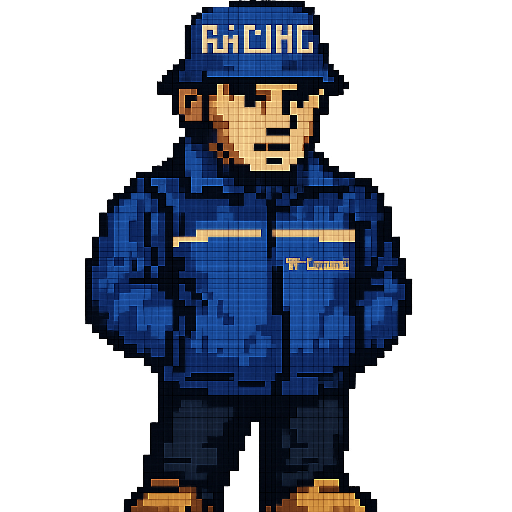

<div class="about-container">
  <div class="about-content">
    
    <h1 class="retro-title">Mauro Panzini</h1>
    <h3 class="retro-subtitle">Desarrollador .NET - Estudiante de programación en la UTN</h3>
    <p class="game-label">Juego propio: <strong>Buscaminas</strong></p>
    <p class="retro-text">
      El Buscaminas es un clásico juego de estrategia y lógica, donde el objetivo
      es despejar un tablero sin activar ninguna mina. Cada casilla vacía revela
      un número que indica cuántas minas hay en las casillas vecinas. El jugador
      debe deducir la ubicación de las minas y marcarlas con banderas. La partida
      termina cuando se descubren todas las casillas seguras o si se hace clic en
      una mina. Es un desafío que requiere observación, análisis y precisión.
    </p>
  </div>
</div>
